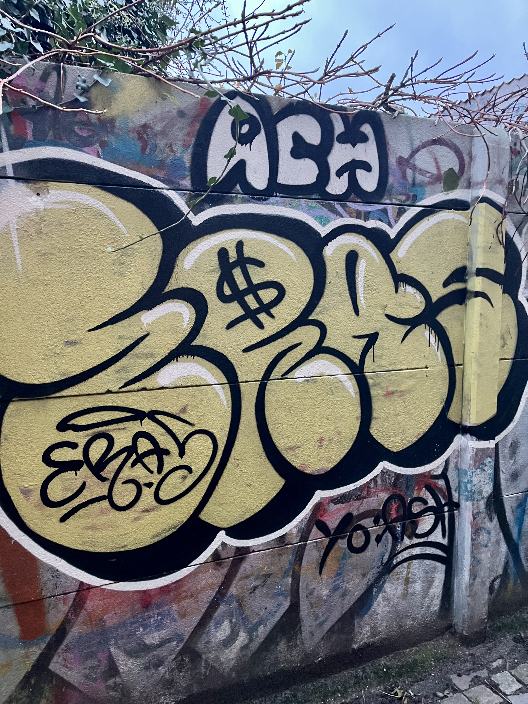
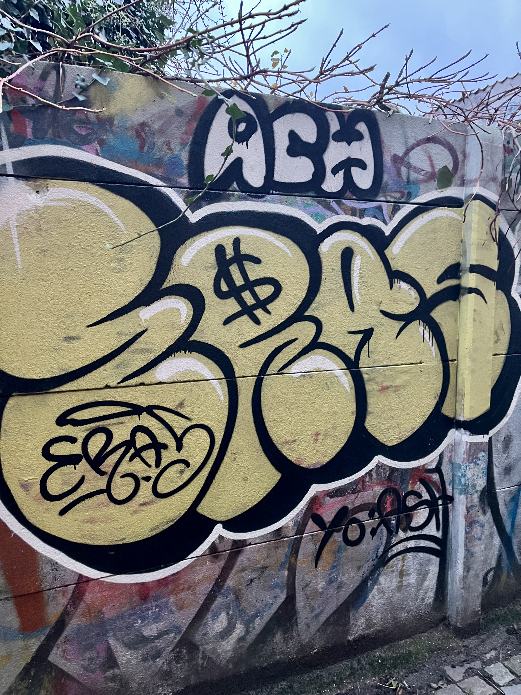

tom.explores
Loved how raw this spot feels. It's small, but there's always something new on the walls.

 



Blink and you'll miss it. Snævringen is one of Aarhus' smallest streets, but it's packed with attitude. A quick walk here reveals bold graffiti, hidden details and the city's underground energy.
Tucked away between Mejlgade and Studsgade, Snævringen is easy to miss if you're not looking for it. The walls here change often, carrying quick tags, experimental pieces and spontaneous expressions that reflect the pulse of the city.
It's not polished or curated: it's living street art, shaped by those who pass through and leave their mark. The surrounding streets hide even more interesting pieces, making this small passage a great starting point to explore the raw, ever-evolving side of Aarhus' urban culture.
 Best at 10-15
Best at 10-15
 Well lit
Well lit
 Easily accessible
Easily accessible
Loved how raw this spot feels. It's small, but there's always something new on the walls.
Small space, but packed with character. Best combined with a walk around Mejlgade.
Easy to miss, but totally worth stopping. The surrounding streets have even better surprises.